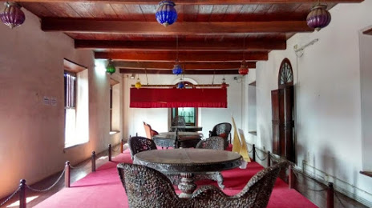

Home
(current)
Explore
Districts
Adventure
Holiday Packages
Cusines
Heritage
The Wild
Reviews
Destination
WaterFalls
Beaches
Museum
Contact Us
Sign In
Search
KANNUR
Kannur, more popularly known as Cannanore, is a northern district in Kerala famed for its vibrant culture and rich heritage. Sharing its borders with the Western Ghats and Arabian Sea, the region exhibits abundant natural beauty and cultural traditions. The flavours of the region are unique making it a paradise for food lovers. Thalasseryi Dum Biriyani is one of the heavenly dishes every traveller should taste at least once in their lifetime. The list of other lip smacking items includes Ari Unda, Neypathiri, Unnakkaya, Pazham Nirachathu, Elayada, Kalathappam and Kinnathappam
How to Reach:
Bus
Kannur is 7 Kms from Azhikode, 18 Kms from Parassinikadavu, 21 Kms from Vaduvankulam, 90 Kms from Kozhikode, 112 Kms from Madikeri, 211 Kms from Mangalore, 272 Kms from Kochi and is linked via Kerala State Road Transport Corporation (KSRTC) and some private travel services.
Train
It has its own Railway Station named as Kannur Railway Station. It is well connected to the major cities like Chennai, Pune, Delhi and Mumbai
Flight
The nearest International Airport from Kannur is Mangalore International Airport, roughly three and half hour drive from the town. It is well connected to a spectrum of cities like Abu Dhabi, Bahrain, Doha, Dubai, Kozhikode, Kuwait, Mumbai and Muscat.
Places to Visit
Payyabalam beach:
The impeccably unspoilt Payyabalam beach is adorned with sparkling pearls of golden sand and foamy white waves of the Arabian Sea. The highlight of Kannur and one of the many beautiful beaches of Kerala, it has an incredibly peaceful and inviting aura.
St Angelo's Fort:
St Angelo's Fort is definitely one of the most popular and frequently visited attractions of Kannur and for more reasons than one. The polished yet prehistoric structure of this fortress oozes with unadulterated elegance and overwhelming power. Standing ashore in the Arabian sea, it enjoys a panoramic and unobstructed view of the diorama created by the merger of the magnetic waves and the azure waters. It also overlooks the mesmerising Mopilla Bay, a natural harbour.
light House:
Being Kerala's first lighthouse ever and Kannur's only one, the Kannur Lighthouse is a pretty big deal. This cylindrical concrete tower has a balcony with a light that is lit as the evening breaks in to alert the seamen of the land.
Parassinikadavu Snake Park:
Regarded as one of the finest snake sanctuaries of Asia, the Parassinikadavu Snake Park is the pride of the south. This snake park is one of the most prominent reptile preservation centres in the country and is the only one in Kerala. It is home to over 150 different species of reptiles like crocodiles, monitor lizards and snakes- both venomous and non-venomous
Things to do
Dolphin rides:
Experienced dolphin spotting experts and boatmen will ensure that your dolphin spotting trip of 20 minutes is a success and. Have a fun time watching these adorable creatures playing around in their natural habitat.
Site Seeing:
sightseeing tour of Kannur and will give you a great experience of the local culture, traditions, beliefs, food and lifestyle.
Banana Boat ride:
Enjoy being toppled over with the sudden turn. Feel the joy of floating and head back refreshed.
Gallery
